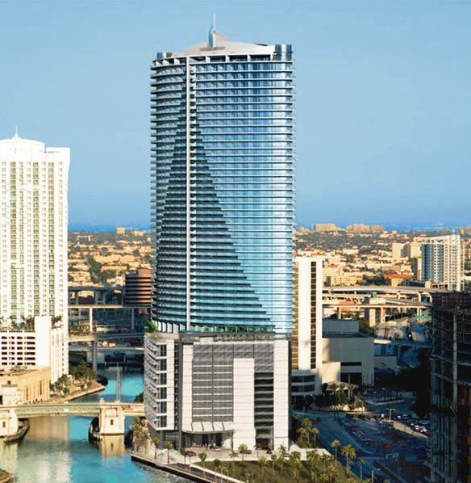

Although you generally will not be doing much sleeping, you still need a place to rest that pretty little head of yours. Also, you need a place to re-group, change, chill out and most definently shower. Determining on what Hotel you stay at all depends on how much your willing to spend. FYI, UMF is not going to be a cheap weekend. Unless you look like a Victoria Secret model, your Dad owns the Fountain Blue, or your hooking up with a DJ- expect to be spending some major benjamins.
Luckily, I have alot of NY friends who are promoters who get compted free hotel rooms at certain hotels they're promoting at. Also, I have a twin brother who goes to Umiami who by brotherly-sisterly law has to take me into his home no matter what.
In regards to Hotels its all about location, location, location. UMF is located at Bayfront Park this year on 301 Biscayne Blvd. If I were you, I'd book the hotels months in advance.
Best Locations: INTERCONTINENTAL This hotel is walking distance and is really nice. THey have 641 guest rooms, including 34 suites and 103 Club rooms. You honestly don't need to stay at one of the hottest most expensive hotels in Miami. Driving during Ultra is a bad,bad, bad idea. I cannot reiterate that enough. You want to be as close to Bayfront as possible. Cabs are pricey and you want to save your money. Of course, lots of people take the train if you are staying at a friends house close to the Umiami campus which is in Coral Cables. But like I said, walking is your best option! Plus- there is a CVS down the street to get your goodies.
EPIC MIAMI This hotel is a little farther and a little pricier then the Intercontinental but is still walking distance. All 411 guestrooms have a private balcony so you can see the sunrise over Biscayne Avenue, Bricket Key and Brickell Avenue.
One of your cheapest hotels to stay at would be RIVER PARK HOTEL SUITES Don't expect massages and 5 star room service but this is the cheapest hotel in close proximity to Bay Front. Honestly, who cares if you stay in the nicest hotel. You'll probably be at the hotel to literally: sleep for 2 hours, shower, get ready and GO.